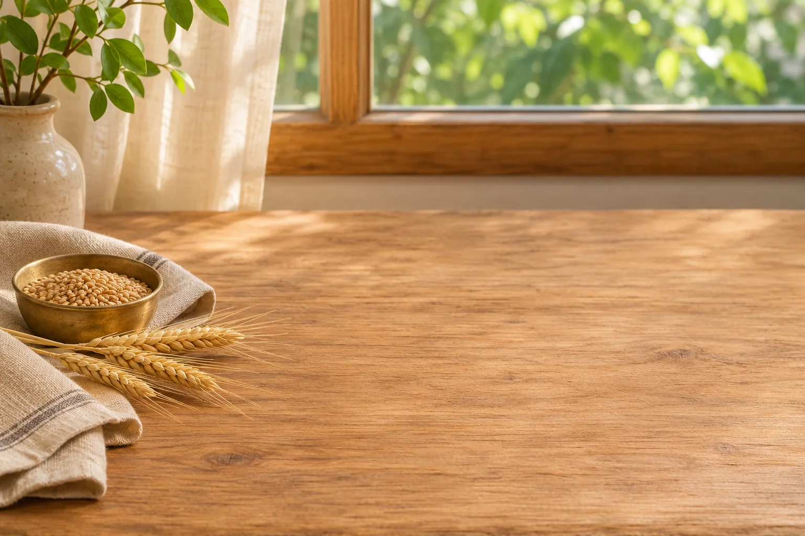
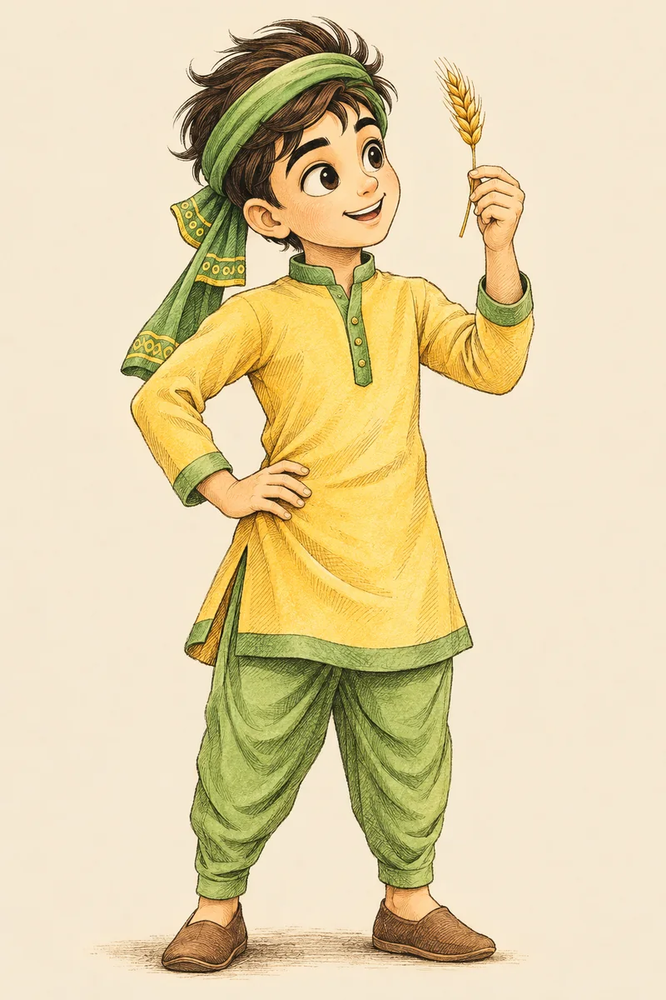

Stone-milled whole wheat atta
Atta in its purest form
Ours is milled slowly on natural stone. Fresh, every week.

 Table: concept image
Table: concept image
A note on habit
We question everything. Why not atta?
We keep changing everything around us. Our skincare, our cooking oil, even our utensils, because we research what is best for our family. So why don't we stop and think about our atta? Its quality, where it comes from, how it is made. We just take their word for it.

Concept artSix plates
The Atulyash way
Every choice behind our atta, written down.
- I
The wheat
Single-origin MP Sharbati. Never blended with other varieties.
- II
The cleaning
In several stages.
- III
The stone
Natural stone chakkis. No emery stone, no steel rollers.
- IV
The chokar
Chokar kept in. Nothing removed, nothing added.
- V
The milling day
Milled in small batches the day before, delivered the next morning. Packed with minimal handling.
- VI
The delivery
We deliver with our own riders.